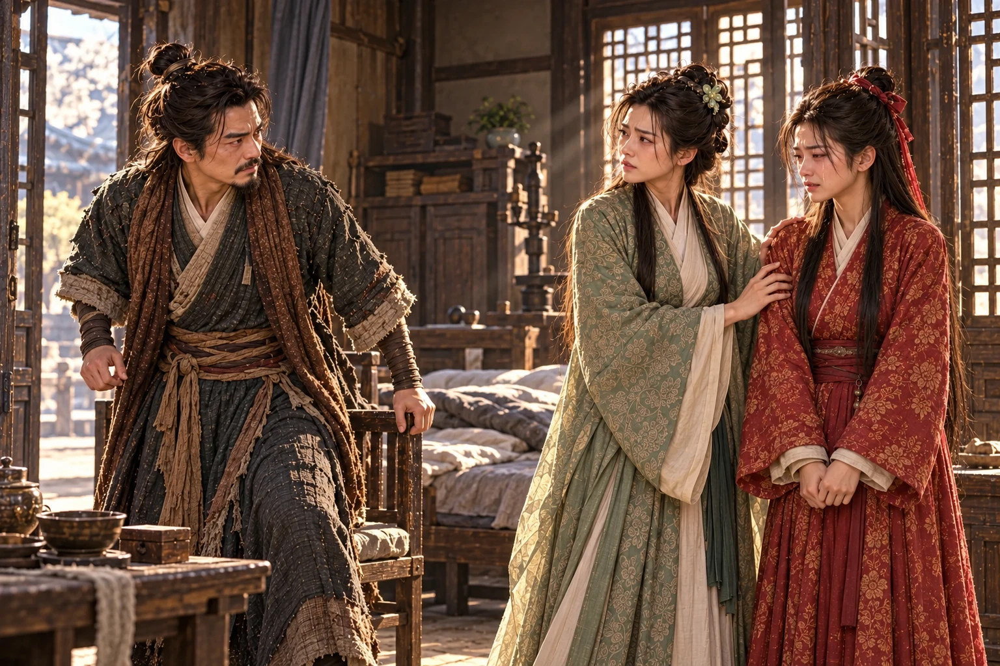

Pagi itu kembali ke jalan tempat keluarga Guo berlindung. Ia tidak hendak menemui . Setelah menitipkan kuda kepada , ia sempat berjalan sampai gerbang, tetapi bayangan Dani yang terluka membuatnya berbalik. Jika benar pemuda itu hendak menikahi , sekurang-kurangnya Fu harus mengetahui kapan lukanya terasa sakit dan bagaimana ia menyembunyikan nyeri di balik tawa.
masih berada di tangannya. Sepanjang perjalanan pendek itu, ia mencoba membayangkan menyerahkannya kepada orang lain. Setiap kali bayangan tersebut menjadi jelas, langkahnya melambat.
Di serambi luar, suara seorang lelaki menyebut namanya.
“Di hadapan para pendekar mereka menyebut pernikahan seolah-olah semuanya baru akan dimulai,” kata . “Padahal sebelum pertemuan itu, mereka sudah bermalam berdua di sebuah gubuk di Zhongnan.”
Xiaolongnü berhenti di balik tiang. Zhen berdiri bersama , dikelilingi beberapa orang yang hendak berangkat membantu penjagaan kota. Kedua pendeta itu singgah setelah mendengar keluarga Guo berpindah kediaman. Di antara pendengar, Guo Fu baru keluar membawa baskom. Nama Dani menahan langkahnya.
“Engkau melihat sendiri?” tanya Fu.
Zhen mengenali putri . Ia tahu perkataannya kini akan sampai ke tempat yang tepat. “Aku melihatnya meraih wajah Dani dan membiarkan pemuda itu mendekat. Pintu mereka kemudian ditutup. Seorang guru tidak menyambut muridnya dengan cara demikian.”
Yang disaksikannya berhenti pada kedekatan itu. Ia telah pergi sebelum malam berlanjut. Namun jeda yang dibiarkannya sesudah berkata-kata membuat para pendengar membayangkan lebih banyak daripada yang dapat diberikannya sebagai kesaksian.
“Jadi, selama ini mereka telah mempermainkan Ayah?” Fu meletakkan baskom. Rasa malu karena kabar perjodohan yang didengarnya dari kedua Wu belum reda; sekarang ia merasa menemukan sebab lain untuk marah.
Zhao mengelus ujung lengan bajunya. “Murid yang berani menentang gurunya sendiri tentu tidak sukar melupakan tata susila. Saudara Zhen pernah mencoba menegurnya, tetapi dibalas dengan pukulan.”
“Dani memukulnya karena ia mendekatiku ketika aku tidak dapat bergerak.”
Xiaolongnü keluar dari balik tiang. Suaranya tidak tinggi, tetapi percakapan di serambi segera berhenti. Zhen mundur setengah langkah. Fu memandang pedang di tangan perempuan itu, kemudian wajahnya yang putih dan tenang.
“Katakan juga bagian itu,” lanjut Xiaolongnü. “ menahan tubuhku. Aku tidak memanggilmu, dan aku tidak menghendaki tanganmu menyentuhku. Dani datang untuk menolong. Mengapa engkau tidak menceritakan apa yang hendak kaulakukan sebelum ia memukulmu?”
Zhen membuka mulut. Nama perguruannya, pendapat orang-orang, dan wajah gurunya seakan berdesakan di tenggorokan. Ia ingin membantah tanpa mengucapkan kebohongan yang dapat segera dibuka perempuan di depannya.
“Aku datang karena mengira Nona memerlukan pertolongan.”
“Aku memang memerlukan pertolongan. Sebab itu aku memandang pintu ketika datang.” Tatapan tidak bergeser. “Engkau melihat ketakutanku. Jangan menyebutnya sesuatu yang lain.”
Seorang lelaki di serambi menoleh kepada kawannya. Bisik mereka membuat wajah Zhen memerah. Perempuan yang hendak dicelanya kini memaksanya berdiri di dalam cerita yang sengaja dipotongnya sendiri.
Zhen menatap Xiaolongnü dengan kepahitan yang tidak lagi menyerupai nasihat pendeta. “Aku bersalah karena mendekatimu. Tetapi apakah itu membuat hubunganmu dengan Dani menjadi benar? Engkau gurunya!”
“Ia orang yang hendak kukawini.” Xiaolongnü menggenggam sarung pedangnya lebih erat. Menyebut kehendak itu terasa menyakitkan setelah apa yang didengarnya malam tadi. “Orang lain boleh menentangku. Engkau tidak berhak memakai namanya untuk menutupi perbuatanmu.”
Fu menyela, terlalu tergesa untuk memahami perbedaan keduanya. “Jadi perkataannya tentang kalian di gubuk itu benar?”
Xiaolongnü berpaling kepadanya. Ia tidak merasa perlu menyangkal cintanya, tetapi mendengar kelembutan yang pernah dimilikinya dijadikan bahan celaan membuat dadanya sesak. “Aku mempercayakan diriku kepada Dani. Aku tidak pernah mempercayakannya kepada pendeta ini.”
Fu menundukkan mata. Jawaban itu tidak menenteramkannya. Ia telah dibesarkan di tengah orang yang menempatkan guru setara orang tua; pengakuan tersebut terdengar seperti pembenaran atas sesuatu yang seharusnya memalukan. Dalam sakit hatinya sendiri, ia tidak berusaha memahami lebih jauh.
Zhen melihat perubahan wajah Fu dan meraih kesempatan terakhir. “Dengarlah. Ia sendiri tidak menyangkal. Mengapa hanya aku yang harus menanggung cela?”
keluar dari sarungnya.
“Karena aku tidak akan membiarkanmu menyakiti Dani sekali lagi,” kata Xiaolongnü.

Zhao menarik Zhen ke belakang, lalu mendorong bangku melintang di serambi. Para pendengar berpencar; seorang terjatuh tepat di jalur bilah Xiaolongnü. Ia menahan serangan agar tidak mengenai orang itu. Kedua pendeta menggunakan sela tersebut untuk melompati pagar samping.
“Kembalilah ke !” desis Zhao kepada kawannya. “Jangan tunggu ia menebasmu di sini!”
Xiaolongnü melewati bangku. Sebelum menyusul, ia menoleh kepada Fu. “Dani sedang terluka. Jagalah dia.” Permintaan itu keluar meskipun hatinya menolak menyerahkan pemuda tersebut. Kemudian ia berlari mengikuti kedua pendeta, membawa Pedang Perempuan yang belum sanggup diberikannya.
Fu tertinggal di serambi. Ia hendak mengatakan bahwa tidak ada pernikahan yang disetujuinya, tetapi Xiaolongnü sudah menghilang. Yang tersisa justru rasa terhina: Dani mengaku akan menjadi suaminya tanpa meminta persetujuannya, sementara perempuan yang dicintainya datang menyuruh Fu merawatnya.
terbangun oleh bunyi daun pintu. Di dekat bantalnya tersandar ; di bawah ranjang, buntalan ibunya belum dibuka. telah dipanggil ke kamar kedua putranya. Tubuh Dani terasa dingin dan berat, tetapi ia masih dapat mengangkat kepala ketika melihat Fu masuk.
“Nona Guo datang sepagi ini. Rupanya obat yang kubayar dengan celaan kemarin belum cukup pahit.”
Fu tidak tersenyum. Ia menutup pintu, lalu berdiri di hadapannya. “Apa yang kaukatakan kepada kedua kakak Wu tentang aku?”
Senyum Dani menghilang sedikit. Ia sudah menduga kebohongan itu akan ditagih, hanya tidak secepat ini. “Mereka hendak saling membunuh. Aku mengatakan sesuatu supaya kemarahan mereka beralih kepadaku.”
“Katakan perkataanmu itu. Jangan ceritakan kepadaku apa yang hendak kaulakukan.”
Dani menatap tepi selimut. “Aku mengatakan Paman dan telah membicarakan kembali perjodohan kita, dan kali ini aku menerimanya.”
“Menerimanya?” Suara Fu bergetar. “Seolah-olah aku duduk menunggu kapan engkau sudi menerima! Ayah pernah menawarimu, engkau menolak di hadapan semua orang. Sekarang namaku kaubawa lagi ketika engkau memerlukannya.”
“Aku tahu perkataan itu menyakiti nama baikmu.” Dani mengangkat wajah. “Aku akan menjelaskan kepada mereka bahwa semuanya dusta. Aku tidak akan membiarkanmu menanggungnya.”
“Engkau juga berkata aku menceritakan percakapan kami kepadamu. Mereka mengulanginya satu per satu kepadaku tadi. Sejak kapan aku mengadu kepadamu tentang siapa yang hendak kupilih?”
Dani tidak segera menjawab. Ingatan tentang kedua Wu yang mulai saling melindungi semalam sempat membuatnya puas; sekarang ia mendengar sisi lain dari siasat yang sama. Ia telah menjadikan kehormatan seorang gadis alat untuk memenangkan pertengkaran.
“Aku mendengar kalian dari jalan taman,” katanya. “Aku memakai perkataan itu supaya mereka percaya. Dalam hal ini aku bersalah kepadamu.”
Fu menunggunya menambahkan sesuatu. Bukan alasan lain; barangkali sedikit keraguan ketika mengatakan bahwa perjodohan itu hanya dusta. Namun Dani tampak ingin secepatnya membereskan perkara tersebut, seolah seluruh kesulitannya selesai bila ia menerangkan bahwa dirinya tidak menginginkan Fu.
“Begitu mudah engkau mengatakannya sekarang.” Fu mengusap pipi dengan gerakan marah. “Kedua kakak Wu hampir mati. Ayah terluka. hilang. Setiap orang harus membereskan akibat kepandaianmu berkata-kata!”
Wajah Dani menegang. “Kau boleh menuntutku karena dusta itu. Tetapi jangan menyebut darah yang tertumpah semalam hanya akibat perkataanku.”
“Lalu siapa yang membawa Polu keluar? Siapa yang menjaga adikku ketika merampasnya?”
“Bibi membawanya menjauhi kebakaran. Ketika kami hendak mengembalikannya, menyerang. Li Mochou mengambilnya dalam kekacauan itu. Aku mengejar sampai menemukan kedua kakak Wu sedang berkelahi.”
“Dan mereka kauselamatkan, tetapi adikku tidak!”
menarik napas. Tuduhan itu melukai karena bagian terakhirnya benar: Polu belum pulang. Ia tidak dapat memperlihatkan bayi yang selamat sebagai jawaban. “Kalau kutinggalkan mereka, Paman Wu akan mengubur dua putranya. Aku tidak sanggup melakukannya.”
“Engkau selalu mempunyai alasan untuk memilih siapa yang harus ditolong.” Fu mencengkeram ujung lengan bajunya. “Ibuku sedang mencari bayi yang bahkan belum sempat dikenalnya. Apakah engkau memikirkan itu?”
“Aku memikirkannya sejak tangis Polu tidak terdengar lagi.” Suara Dani merendah. “Bila tubuhku sanggup berdiri, aku akan mencarinya. Tetapi jangan menuduh Bibi menyerahkannya kepada Li Mochou.”
Nama Bibi membuat Fu mengangkat dagu. Ia datang untuk menuntut pemulihan nama baiknya; kini sekali lagi ia mendengar betapa cepat Dani membela perempuan lain. Kepedulian yang ditunjukkannya ketika membawa air semalam terasa memalukan di hadapan pembelaan itu.
“Tentu gurumu tidak pernah bersalah di matamu. Engkau boleh mempermalukanku untuk menolong orang, dan ia boleh melupakan tata susila karena mencintaimu.”
“Perkaramu denganku belum selesai. Tidak perlu menyeretnya ke sini.”
“Ia sudah datang sendiri ke sini.” Fu menikmati perubahan mendadak pada wajah Dani, lalu membenci dirinya karena menikmatinya. “Pagi tadi ia berdiri di depan orang-orang. mengatakan apa yang dilihatnya di Zhongnan. Gurumu tidak menyangkal.”
Dani duduk terlalu cepat. Nyeri merambat dari dada sampai siku. “Bibi ada di sini? Ke mana ia pergi?”
“Mengejar kedua pendeta itu. Mungkin ia hendak menutup mulut mereka sebelum lebih banyak orang mendengar.”
“Zhen hendak mencelakainya ketika tubuhnya . Aku yang menghalanginya.” Dani menahan tepi ranjang. “Kalau pendeta itu memakai kejadian tersebut untuk mencela Bibi, ia sedang menutupi dosanya sendiri.”
Fu terdiam sesaat. Perkataan itu sesuai dengan bantahan . Ia sempat dapat berhenti di sana, kembali kepada kebohongan yang memang menjadi kesalahan Dani. Namun kemarahan dan harga dirinya mendorongnya melewati kesempatan tersebut.
“Aku mendengarnya berkata engkau orang yang hendak dikawininya,” kata Fu. “Lalu ia menyuruhku menjaga engkau. Mengapa aku harus menerima pemuda yang sudah dibawanya melanggar hubungan guru dan murid?”
Dani menatapnya. “Ia memintamu menjagaku?”
Fu menyangka pertanyaan itu pura-pura tidak mengerti. “Jangan harap aku akan berterima kasih atas kemurahan hatinya. Kalian telah hidup seperti suami istri, kemudian namaku hendak dipakai supaya dunia menganggapmu terhormat. Gurumu itu sungguh tidak tahu malu.”
Tangan kanan bergerak sebelum ia sempat menahan amarahnya. Tamparan itu membuat kepala Fu berpaling dan tubuhnya membentur sandaran kursi.
Sesudah bunyinya lenyap, keduanya terdiam. Dani melihat bekas merah di pipinya. Ia telah melakukan sesuatu yang tidak dapat ditarik kembali dengan penjelasan, sama seperti perkataan yang membawa mereka ke kamar ini.
“Aku tidak seharusnya memukulmu,” katanya, napas tersengal. “Tetapi jangan ulangi penghinaan itu. Jika engkau membenciku, tujukanlah kepadaku.”
Fu menyentuh pipinya. Sejak kecil orang menyingkir ketika ia marah; bahkan teguran ayahnya datang dengan nama kecil yang masih terasa seperti pelukan. Sekarang pemuda yang menolak dirinya telah memukulnya demi membela Xiaolongnü. Tangis yang sejak tadi ditahannya berubah menjadi kemarahan tanpa ukuran.
“Engkau berani memukulku di rumah ayahku!”
Fu mencabut pedangnya. Dani menggeser tubuh ketika ujungnya menyambar dekat bahu. Dengan gerak yang masih diingat tangannya, ia memutar pergelangan Fu dan merampas senjata itu. Pedang jatuh ke lantai di sisi ranjang; Dani sendiri hampir ikut jatuh.
“Aku akan pergi,” katanya. “Simpan senjatamu. Kita sudah cukup menyakiti satu sama lain.”
Ia hendak mengambil buntalan, tetapi lututnya melemah. Fu melihat di dekat bantal. Gagangnya tercapai sebelum Dani sempat menegakkan tubuh. Ia menarik bilah itu dan menyerang lagi, kali ini dengan seluruh tenaga yang lahir dari rasa dipermalukan.
Dani mencoba berdiri. Telapak kakinya tergelincir pada tepi tikar; tubuh yang beberapa hari sebelumnya masih menahan kini tidak sanggup mengangkat dirinya sendiri. Tangan kirinya menopang lantai, tangan kanannya terangkat untuk menahan pergelangan Fu sebagaimana tadi. Gerak itu terlambat.
Bilah Pedang Budiman melintas. Lengan kanan Dani putus di atas siku.
Fu berhenti dengan pedang masih terjulur. Kemarahan yang memenuhi kepalanya lenyap seketika, meninggalkan kamar yang tidak dikenalnya lagi. Dani terjatuh di dekat ranjang. Ia memanggil nama , tetapi yang keluar hanya napas pendek dan suara kesakitan.
“Dani… aku…” Fu mundur. Senjata itu terlepas dari tangannya. Ia tidak mengetahui setajam apa bilahnya, tetapi ia mengetahui siapa yang mengayunkannya. Kini tidak ada dalih yang sanggup membuat apa yang dilihatnya menjadi sekadar pertengkaran.
Dani menatapnya dengan mata terbuka lebar. Kemudian tangan kirinya bergerak ke pangkal lengan yang terluka. Naluri dari latihan bertahun-tahun memaksanya untuk menahan darah, meskipun tenaga dan kesadarannya sudah kacau.
Dari luar terdengar orang memanggil karena bunyi jatuh. Fu membayangkan ayahnya memasuki kamar dan melihat lantai itu. Ia hendak maju, hendak mengambil kain, hendak mengatakan sesuatu; ketakutan mendahului semuanya. Ia berbalik dan keluar melalui pintu samping sebelum siapa pun melihat wajahnya.
tidak mengetahui berapa lama dirinya terbaring. Ketika kesadaran kembali utuh sesaat, ia mendengar langkah orang di serambi, lalu pintu-pintu yang dibuka. Ia menarik kain dari ranjang dengan tangan kiri, menekan luka, dan membalutnya sekuat yang masih sanggup dilakukan. Totokan hanya memperlambat darah; tubuhnya tetap dingin.
Ia memandang pintu. Seharusnya ia memanggil. Paman Guo ada di rumah itu, pun tidak jauh. Namun yang terdengar di kepalanya adalah suara Fu: di rumah ayahku. Tiba-tiba ia kembali menjadi anak yang berdiri di halaman Pulau Bunga Persik, selalu harus menerangkan kesalahan sebelum ada orang bersedia mendengar lukanya.
Perasaan itu tidak adil kepada Guo Jing. Dani belum sanggup memisahkannya dari rasa sakit. Ia takut ditahan, takut melihat Fu berlindung di belakang ibunya, dan lebih takut lagi mendengar orang memintanya bersabar.
Buntalan ibunya tersangkut di kaki ranjang. Dani menarik talinya dengan tangan kiri dan menyampirkannya melewati bahu. tergeletak tidak jauh, tetapi ia tidak dapat membawa semuanya. Ia meninggalkan bilah itu bersama pedang Fu, lalu keluar lewat jendela rendah di sisi kebun.
Beberapa kali ia harus berlutut sebelum mencapai lorong. Jubah luar menutupi pembalutnya; seorang pengungsi mengira ia prajurit terluka yang sedang mencari rombongannya. Dani tidak membetulkan dugaan itu. Di gerbang yang sedang dibuka untuk pemindahan warga, ia mengikuti sisi sebuah gerobak sampai suara penjaga berada di belakangnya.
Tembok Xiangyang masih dijaga untuk melindungi rakyat Han dan negeri Song dari pasukan Mongol. Dani tidak tiba-tiba menganggap perjuangan itu sia-sia. Ia hanya tidak mengerti bagaimana rumah orang yang membela begitu banyak nyawa dapat menjadi tempat tangannya diputus.
Guo Jing tiba di kamar sesudah seorang pelayan menjerit. Ia masih memerlukan penopang ketika berjalan cepat. Namun begitu melihat keadaan lantai dan Pedang Budiman yang ditinggalkan, tangannya lepas dari lengan penolongnya.
“Di mana Dani?”
Tidak ada yang dapat menjawab. Huang Rong masuk di belakangnya. Ia mengenali pedang putrinya di lantai. Tadi Fu melintas tergesa di halaman dengan pipi merah, dan kini jendela kamar terbuka. Kecerdasannya menyusun kemungkinan yang paling tidak ingin dipercayainya.
“Cari dia,” kata kepada orang-orang di pintu. “Bawa obat luka dan tandu. Periksa setiap jalan keluar. Ia tidak boleh dibiarkan berjalan sendirian.”
Seorang pelayan akhirnya mengatakan bahwa Nona Fu keluar dari kamar ini. Huang Rong memejamkan mata. Guo Jing menoleh kepadanya; ia melihat istrinya telah memahami sebelum kabar itu lengkap.
“Panggil Fu kemari.”
“Ia sudah pergi,” jawab Huang Rong.
Guo Jing terdiam. Ketika berbicara lagi, suaranya lebih rendah daripada teriakan tadi. “Anak itu membawa aku pulang dari kamp. Ia menjaga rumah kita ketika aku tidak sanggup bangkit. Sekarang ia kehilangan lengan di bawah atap yang seharusnya melindunginya.”
Huang Rong menyentuh tepi meja untuk menahan tubuhnya. Baru sehari ia melahirkan, belum ditemukan, dan kini Fu telah melakukan sesuatu yang tidak dapat diperbaiki oleh kepandaian ibunya. “Aku akan mencarinya dan menanyakan apa yang terjadi.”
“Apa pun perkataan , apakah itu dapat menumbuhkan kembali lengannya?” Guo Jing menatap pedang di lantai. “Bawa Fu pulang. Ia harus bertanggung jawab.”
mengenal nada tersebut. “Apakah engkau hendak mengambil lengannya sebagai ganti?”
“Jangan meminta aku menganggapnya lebih ringan karena pelakunya putriku.” Suara Guo Jing pecah pada kata terakhir. “Aku mencintainya. Itulah sebabnya aku tidak boleh membiarkannya percaya bahwa darah orang lain dapat dibayar dengan nama ayahnya.”
Huang Rong tidak menjawab. Ia teringat tawaran kepalanya sendiri kepada : betapa teguh ia merasa ketika nyawa yang dijanjikannya adalah miliknya. Sekarang yang terancam putrinya, dan keteguhan itu goyah.
“Dani harus ditemukan dahulu,” katanya. “Aku akan mencari Fu. Jangan menyuruh orang mengejarnya dengan senjata.”
Guo Jing hendak bangkit, tetapi luka dalamnya memaksanya berpegangan pada kursi. Huang Rong meraih tongkat. Ia tidak menunggu suaminya mengatakan setuju; ketika melewati pintu, ia tahu dirinya sedang memilih sesuatu yang akan melukai kepercayaan di antara mereka.

Huang Rong menemukan Fu menjelang petang di sebuah gubuk penyimpan jerami di luar kota. Gadis itu bersembunyi di belakang ikatan kayu, masih mengenakan pakaian pagi tadi. Mendengar suara ibunya, ia keluar merangkak dan memeluk kakinya.
“Ibu, apakah Ayah sudah tahu?”
Huang Rong berlutut dengan susah payah. Ia memegang bahu putrinya, memaksanya mengangkat wajah. “Dani belum ditemukan. Itu yang lebih dahulu harus kaupikirkan.”
Fu mulai menceritakan kebohongan restu, penghinaan, dan tamparan. Perkataannya berkejaran mencari tempat yang membuat dirinya tampak tidak sepenuhnya bersalah. Ketika sampai pada pedang kedua, suaranya berhenti.
“Engkau melihat ia tidak sanggup berdiri?” tanya Huang Rong.
Fu mengangguk kecil.
“Lalu engkau tetap mengayunkannya?”
“Aku sangat marah, Ibu. Aku tidak mengira…” Fu menutupi wajah. “Aku tidak mengira akan menjadi begitu.”
Huang Rong menarik tangan itu turun. “Bilah pedang tidak mengetahui seberapa jauh kemarahan yang kaumaksudkan. Engkau tidak dapat memanggilnya kembali sesudah ia mengenai orang.”
Tangis Fu membesar. Ia akhirnya menyebut nama tanpa menyambungnya dengan tuduhan. Tetapi ketika mengatakan bahwa ayahnya menuntut pertanggungjawaban, ketakutan kembali mengalahkan hal-hal lain.
“Jangan bawa aku kepada Ayah malam ini. Ibu, aku mohon.”
Huang Rong menatap pintu gubuk. Di luar sana orang-orang sedang mencari pemuda yang mungkin kehabisan darah; di hadapannya putrinya gemetar memegang lengan yang masih utuh. Ia mengetahui ketidakadilan pilihannya bahkan ketika tangannya mulai membetulkan pakaian Fu.
“Tinggallah di sini sampai aku kembali. Jangan menyalakan api, dan jangan keluar menemui orang.” Huang Rong melepas jubah luarnya untuk menyelimuti Fu. “Aku menyembunyikanmu malam ini. Aku tidak mengatakan bahwa engkau tidak bersalah.”
Fu meraih jubah itu seperti seorang anak. Huang Rong membiarkannya memeluk sebentar sebelum berdiri. Ia telah meninggalkan suaminya untuk melindungi putri mereka; sekarang ia harus kembali mencari jejak Dani, dengan rahasia baru yang sengaja disimpannya sendiri.
Di antara rumpun gelagah, Dani bersandar pada batu rendah. Ia telah berhenti berkali-kali; Xiangyang tidak terlalu jauh, tetapi untuk kembali ia harus menempuh jalan yang tidak sanggup dipandangnya. Pembalutnya kembali lembap. Lengan baju di sisi kanan terlipat tanpa tangan yang biasanya menariknya lurus.
Ia mencoba meraih tali buntalan dengan tangan yang sudah tidak ada. Gerak yang tidak sampai itu membuatnya menunduk lama. Tangan yang mengayun pedang bersama , menarik dari tembok, dan menggenggam jari ayah angkatnya di Huashan tidak akan kembali hanya karena ia masih dapat mengingat beratnya.
“Bibi, aku belum menikahi siapa pun,” bisiknya.
Ia tidak tahu apakah Xiaolongnü masih hendak mendengar. Fu hanya mengatakan Bibi mengejar kedua pendeta itu. Dani teringat , tempat mereka mungkin mencari perlindungan; gunungnya terasa sangat jauh. Tetapi Dani masih ingin menjelaskan dustanya sendiri sebelum orang lain menjelaskan hidupnya untuknya.
Dengan telapak kiri menekan batu, ia mengangkat tubuh sedikit dan gagal. Ia menunggu sampai pandangannya kembali terang, kemudian mencobanya lagi. Untuk saat itu ia belum sanggup berdiri. Ia hanya berhasil menghadap jalan menuju pegunungan, dan bertahan agar matanya tidak tertutup terlalu lama.